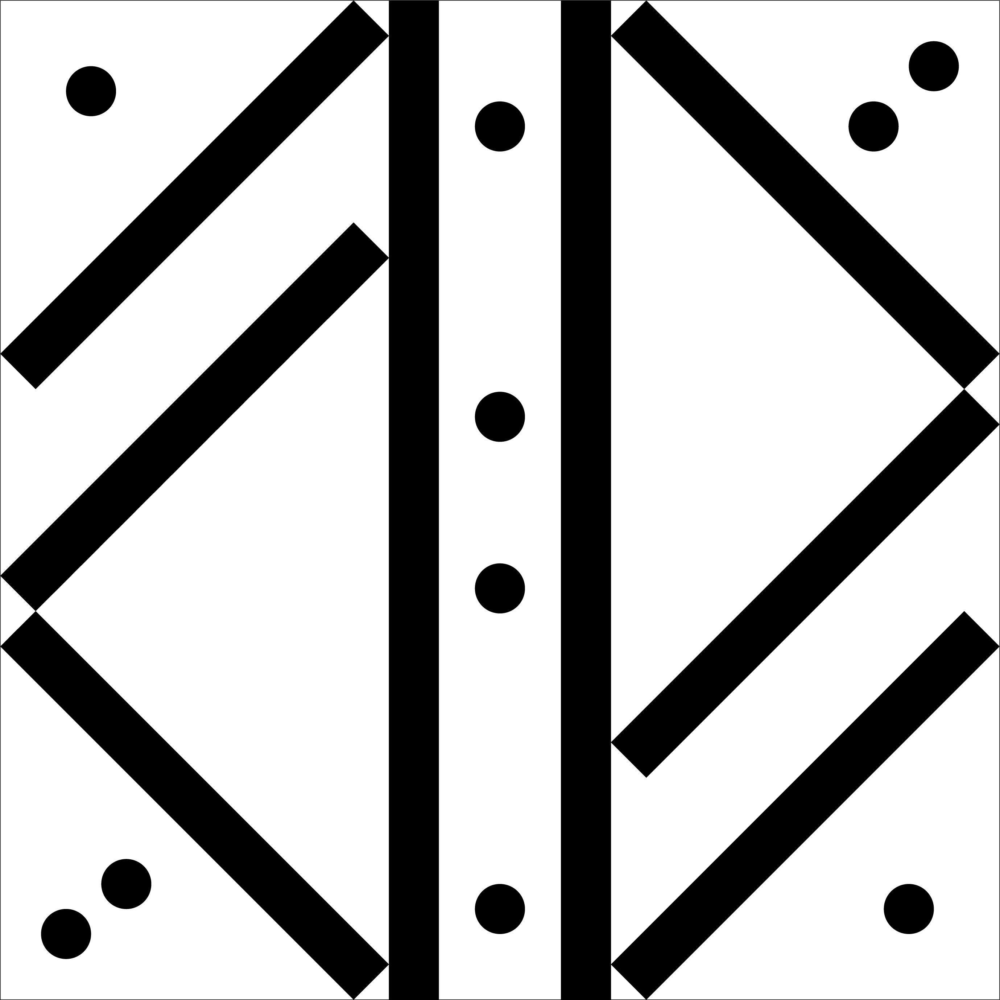

「Monochrome」
授業課題 平面構成

Overview
- 課題制作 制作全般
- 制作時期：2025年 11月
- 使用ツール：Illustrator
- 設定：200mm×200mm枠
- 図形条件：直径1cm正円10個、短辺1cm×長辺10cm長方形10個
接続あり、交差なし - 着彩条件：線なし、塗なし
Concept
本作は、モノクローム配色を用い、形の配置と対称性に着目して制作した作品です。 直線と円を組み合わせ、画面の中心軸を意識しながら構成することで、安定感と緊張感の両立を試みました。 色を排することで、形そのものの強さや配置のわずかな違いが印象に与える影響を明確にしています。 抽象的な構成の中で、視線が自然に移動する画面づくりを意識しました。